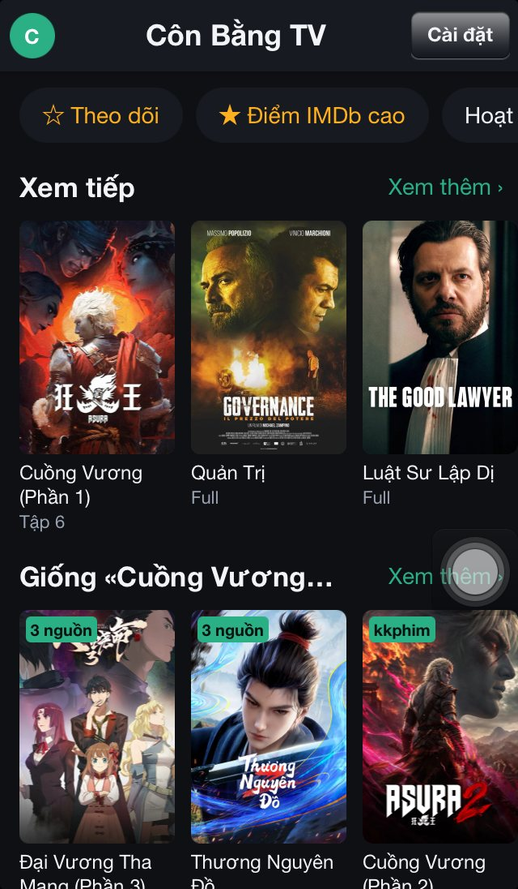
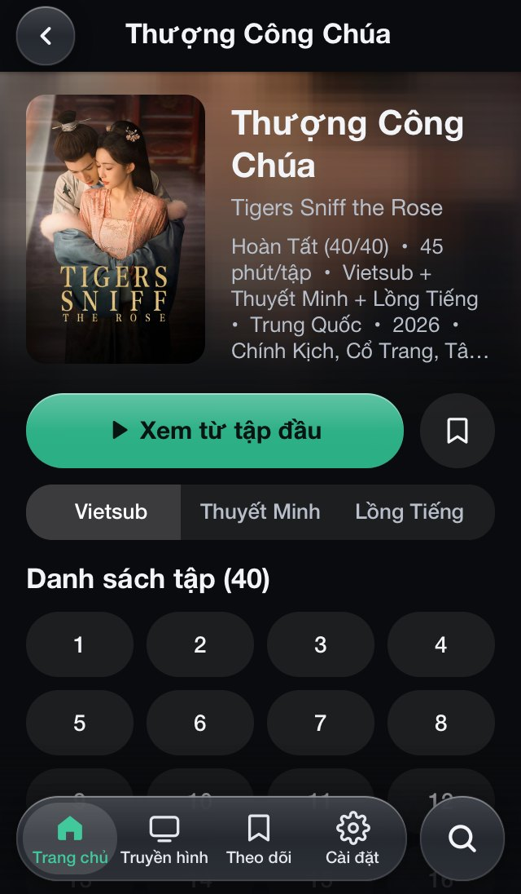
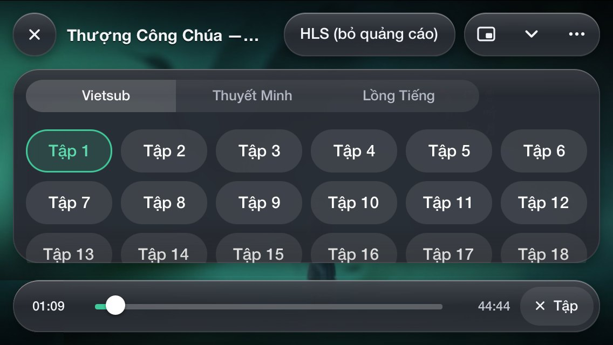

Côn Bằng TV Legacy
Xem phim từ nhiều trang phim, gom về một trang chủ — cho iPhone / iPad iOS 5 và iOS 6




Có gì
- Trang chủ gom phim mới từ nhiều trang, Xem tiếp, Có tập mới, Điểm IMDb cao, Thể loại / Quốc gia
- Phát bằng chip giải mã của máy (HLS bỏ quảng cáo chèn, MP4), nhớ chỗ xem, chọn tập khi đang xem, phụ đề, chọn chất lượng
- Phim Âu Mỹ 4K (dexter.pw): phim lẻ, phim bộ chia mùa, phụ đề tiếng Việt / tiếng Anh
- Truyền hình (IPTV): tự thêm danh sách kênh M3U của mình, lịch phát sóng, nhắc giờ, kênh thể thao theo giờ trận
- Tìm trên mọi trang, theo dõi phim, phim liên quan, đổi nguồn khi phim có ở nhiều trang
- Nhiều người xem, mã PIN, hồ sơ trẻ em, giới hạn giờ xem, xem riêng
- Đồng bộ trong nhà với Côn Bằng TV trên tivi, Windows, iPad mới
- DNS mã hoá, vượt chặn (3 mức), proxy SOCKS5 / Shadowsocks
- Tự cập nhật trong app (hoặc qua Cydia)
Mới trong bản 0.5.3
- Truyền hình (IPTV): chip «Truyền hình» ở trang chủ. App không kèm sẵn kênh — tự thêm địa chỉ danh sách M3U / M3U8 mà mình có quyền xem (Cài đặt › Dữ liệu › Truyền hình). Kênh theo nhóm, tìm / gõ số kênh, ★ yêu thích, «Kênh vừa xem»
- Lịch phát sóng (XMLTV ghi trong danh sách hoặc tự đặt): chương trình đang phát / kế tiếp, «Nhắc tôi» 5 phút trước giờ phát
- Trình phát trực tiếp toàn màn hình: «☰ Kênh», vuốt lên / xuống đổi kênh, tạm dừng rồi «Về trực tiếp», nguồn lỗi tự sang nguồn khác
- Kênh thể thao: đọc giờ trận trong tên kênh — trận đang đá lên đầu, «Sắp đá 20:00 · còn 25 phút», «Nhắc lúc bóng lăn»; trận đang đá mà kênh chưa lên sóng thì tự thử lại. Phát được luồng FLV và luồng cần User-Agent / Referer riêng
Bản 0.5.2
- Tập chỉ có bản quá khổ (vd KKPhim Tiên Nghịch tập 166–167: 2542×1080 — máy iOS 5 / 6 chỉ giải mã tới 1920×1080): app báo ngay và gợi ý xem ở trang khác hoặc trong Venetium, không còn chờ gần một phút rồi báo lỗi -11819
- Tập trang đã thêm tên nhưng chưa có video (máy chủ phim báo 404): báo đúng như vậy, kèm nút «Báo khi xem được»; «Báo khi xem được» không còn báo nhầm «Đã xem được» trong hai trường hợp trên
- «Mở trong Venetium» với tập NguonC: mở trang phim của NguonC (trước bị Cloudflare chặn), kèm lời nhắc tắt «Chặn quảng cáo» của Venetium cho trang đó — trình phát NguonC dừng video khi thấy chặn quảng cáo
Bản 0.5.1
- iPad iOS 5: trình phát (và màn «Ai đang xem?») xoay ngang / dọc theo máy — bản 0.5.0 bị giữ dọc
- Chất lượng: không mở bản máy không phát được — vd «1080p» của vài phim khổ siêu rộng (dexter.pw) là 2592×1080, vượt khả năng giải mã của máy đời iOS 6 (trước báo lỗi -11848); đặt 1080p thì app tự phát 720p và báo cho biết. Mục «Chất lượng» chỉ liệt kê bản máy phát được
Bản 0.5.0
- Chạy được trên iOS 5 (5.0 – 5.1.1) — cùng một gói với iOS 6. Đã thử trên iPad 1 (iOS 5.1.1): trang chủ, tìm kiếm, trang phim, phát phim (cả phụ đề, chọn chất lượng), đồng bộ, tự cập nhật
- Máy RAM ít (iPad 1, iPhone 4): mở trình phát thì app nhả bớt ảnh bìa để iOS không tắt app giữa chừng
- Ảnh bìa tải nhanh hơn, mở app nhanh hơn trên máy chậm; ảnh của trang bị nhà mạng chặn tên miền tải qua DNS mã hoá / vượt chặn
Cần gì
- iOS 5.0 trở lên (iOS 5 và iOS 6), đã jailbreak — đã thử trên iPhone 5 (iOS 6.1.4), iPad mini 1 (iOS 6.1.3) và iPad 1 (iOS 5.1.1)
- Khoảng 25 MB trống, Wi-Fi
Miễn phí, không tài khoản. App chỉ là trình xem các trang phim công khai: không lưu trữ, không tải lên, không phát tán phim. Mã nguồn: GitHub · Trang giới thiệu: conbangtvlegacy.github.io · Góp ý: t.me/tivikit